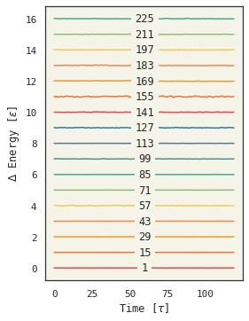

Figure 2 from Paper
import symd
import matplotlib.pyplot as plt
import matplotlib as mpl
import numpy as np
import pickle
import pandas as pd
import skunk
import svglib
import seaborn as sns
base_colors = [
"f94144",
"f3722c",
"f8961e",
"f9844a",
"f9c74f",
"90be6d",
"43aa8b",
"4d908e",
"577590",
"277da1",
]
colors = ["#" + c for c in base_colors]
sns.set_style("white")
sns.set_style("ticks")
sns.set(
rc={
"axes.facecolor": "#f5f4e9",
"grid.color": "#AAAAAA",
"axes.edgecolor": "#333333",
"figure.facecolor": "#FFFFFF",
"axes.grid": False,
"axes.prop_cycle": plt.cycler("color", plt.cm.Dark2.colors),
"font.family": "monospace",
}
)
print(symd.__version__)
1.0.1
def run_sim(n, number_density, group, w=None, retries=5, pos_frames=0, steps=30000):
for i in range(retries):
try:
np.random.seed(i)
cell = symd.groups.get_cell(number_density, group, 3, n, w)
md = symd.Symd(
nparticles=n,
cell=cell,
ndims=3,
images=2,
force="lj",
wyckoffs=w,
group=group,
steps=steps,
exeDir="sim2d",
start_temperature=0.5,
)
md.remove_overlap()
if pos_frames > 0:
md.log_positions(frames=pos_frames)
md.log_output(period=int(1 / md.runParams["time_step"]))
md.run()
break
except RuntimeError as e:
print(e)
md = None
return md
np.random.seed(0)
md = run_sim(5, 0.2, 17, pos_frames=100)
plt.plot(md.pe, label="potential")
plt.plot(md.ke, label="kinetic")
plt.plot(md.te, label="total")
plt.legend(loc="best")
<matplotlib.legend.Legend at 0x7f50e48f2eb0>
All Sims
titles = [str(i) for i in range(1, 231, 14)]
df = pd.DataFrame()
retries = 3
def standardize(te):
i = int(md.te.shape[0] * 0.2)
te = md.te[i:]
return te - np.mean(te)
for i, t in enumerate(titles):
md = run_sim(4, 0.2, i + 1)
df = df.assign(**{t: standardize(md.te)})
{"steps": 1000, "n_particles": 4, "time_step": 0.005, "seed": 435423, "anderson_nu": 100, "langevin_gamma": 10, "bussi_taut": 0.5, "thermostat_seed": 54344, "rcut": 10, "skin": 0.6000000000000001, "temperature": 0.01, "pressure": null, "box_update_period": 0, "start_temperature": 0.5, "thermostat": "baoab", "force_type": "lj", "final_positions": "sim2d/group-3.dat", "cell_log_file": "sim2d/cell_log_file.dat", "print_period": 300.0, "cell": [2.71442, 0.0, 0.0, 0.0, 2.71442, 0.0, 0.0, 0.0, 2.71442], "lj_epsilon": 1, "lj_sigma": 1.0, "n_images": 2, "start_positions": "sim2d/group-3.dat", "group": "sim2d/group-3.json"}
Info: You are running version 229b of symd
Assuming you'll pass parameters via stdin. Waiting...
Warning: assuming default value for com_remove_period = 1000
Warning: assuming default value for position_log_period = 0
Warning: assuming default value for velocity_log_period = 0
Warning: assuming default value for force_log_period = 0
Warning: Setting masses to 1.0
Info: Loaded group group-3 with 4 particles and 2 members
Info: Unormed vectors (column wise):
Info: 2.714420 0.000000 0.000000
Info: 0.000000 2.714420 0.000000
Info: 0.000000 0.000000 2.714420
Info: Projected vectors:
Info: 2.714420 0.000000 0.000000
Info: 0.000000 5.428840 0.000000
Info: 0.000000 0.000000 2.714420
Info: Inverse Projected vectors:
Info: 0.368403 0.000000 0.000000
Info:0.000000 0.184201 0.000000
Info:0.000000 0.000000 0.368403
Info: Duplicating 4 particles into 4 real particles and 996 ghost for group with 2 elements and 124 tilings. Each cell has 8 particles.
Info: Computed 12 degrees of freedom
Step Time T PE KE E Htherm V
0 0 1.09929e+07 80187.3 6.59574e+07 6.60376e+07 6.60376e+07 40.0001
300 1.5 3.25732e+20 -5.42198 1.95439e+21 1.95439e+21 1.95439e+21 40.0001
Exiting due to high temperature or energy (T = 3.44219e+27)
Failed to complete simulation. Ended with code 1
{"steps": 1000, "n_particles": 4, "time_step": 0.005, "seed": 435423, "anderson_nu": 100, "langevin_gamma": 10, "bussi_taut": 0.5, "thermostat_seed": 54344, "rcut": 10, "skin": 0.6000000000000001, "temperature": 0.01, "pressure": null, "box_update_period": 0, "start_temperature": 0.5, "thermostat": "baoab", "force_type": "lj", "final_positions": "sim2d/group-6.dat", "cell_log_file": "sim2d/cell_log_file.dat", "print_period": 300.0, "cell": [2.71442, 0.0, 0.0, 0.0, 2.71442, 0.0, 0.0, 0.0, 2.71442], "lj_epsilon": 1, "lj_sigma": 1.0, "n_images": 2, "start_positions": "sim2d/group-6.dat", "group": "sim2d/group-6.json"}
Info: You are running version 229b of symd
Assuming you'll pass parameters via stdin. Waiting...
Warning: assuming default value for com_remove_period = 1000
Warning: assuming default value for position_log_period = 0
Warning: assuming default value for velocity_log_period = 0
Warning: assuming default value for force_log_period = 0
Warning: Setting masses to 1.0
Info: Loaded group group-6 with 4 particles and 2 members
Info: Unormed vectors (column wise):
Info: 2.714420 0.000000 0.000000
Info: 0.000000 2.714420 0.000000
Info: 0.000000 0.000000 2.714420
Info: Projected vectors:
Info: 2.714420 0.000000 0.000000
Info: 0.000000 5.428840 0.000000
Info: 0.000000 0.000000 2.714420
Info: Inverse Projected vectors:
Info: 0.368403 0.000000 0.000000
Info:0.000000 0.184201 0.000000
Info:0.000000 0.000000 0.368403
Info: Duplicating 4 particles into 4 real particles and 996 ghost for group with 2 elements and 124 tilings. Each cell has 8 particles.
Info: Computed 12 degrees of freedom
Step Time T PE KE E Htherm V
0 0 6074.91 -2.60315 36449.5 36446.9 36446.9 40.0001
Exiting due to high temperature or energy (T = 1.87251e+36)
Failed to complete simulation. Ended with code 1
{"steps": 1000, "n_particles": 4, "time_step": 0.005, "seed": 435423, "anderson_nu": 100, "langevin_gamma": 10, "bussi_taut": 0.5, "thermostat_seed": 54344, "rcut": 10, "skin": 0.6000000000000001, "temperature": 0.01, "pressure": null, "box_update_period": 0, "start_temperature": 0.5, "thermostat": "baoab", "force_type": "lj", "final_positions": "sim2d/group-10.dat", "cell_log_file": "sim2d/cell_log_file.dat", "print_period": 300.0, "cell": [3.41995, 0.0, 0.0, 0.0, 3.41995, 0.0, 0.0, 0.0, 3.41995], "lj_epsilon": 1, "lj_sigma": 1.0, "n_images": 2, "start_positions": "sim2d/group-10.dat", "group": "sim2d/group-10.json"}
Info: You are running version 229b of symd
Assuming you'll pass parameters via stdin. Waiting...
Warning: assuming default value for com_remove_period = 1000
Warning: assuming default value for position_log_period = 0
Warning: assuming default value for velocity_log_period = 0
Warning: assuming default value for force_log_period = 0
Warning: Setting masses to 1.0
Info: Loaded group group-10 with 4 particles and 4 members
Info: Unormed vectors (column wise):
Info: 3.419950 0.000000 0.000000
Info: 0.000000 3.419950 0.000000
Info: 0.000000 0.000000 3.419950
Info: Projected vectors:
Info: 3.419950 0.000000 0.000000
Info: 0.000000 6.839900 0.000000
Info: 0.000000 0.000000 3.419950
Info: Inverse Projected vectors:
Info: 0.292402 0.000000 0.000000
Info:0.000000 0.146201 0.000000
Info:0.000000 0.000000 0.292402
Info: Duplicating 4 particles into 4 real particles and 1996 ghost for group with 4 elements and 124 tilings. Each cell has 16 particles.
Info: Computed 12 degrees of freedom
Step Time T PE KE E Htherm V
0 0 1.63155e+07 19.0551 9.78928e+07 9.78928e+07 9.78928e+07 79.9999
Exiting due to high temperature or energy (T = 2.34589e+41)
Failed to complete simulation. Ended with code 1
{"steps": 1000, "n_particles": 4, "time_step": 0.005, "seed": 435423, "anderson_nu": 100, "langevin_gamma": 10, "bussi_taut": 0.5, "thermostat_seed": 54344, "rcut": 10, "skin": 0.6000000000000001, "temperature": 0.01, "pressure": null, "box_update_period": 0, "start_temperature": 0.5, "thermostat": "baoab", "force_type": "lj", "final_positions": "sim2d/group-11.dat", "cell_log_file": "sim2d/cell_log_file.dat", "print_period": 300.0, "cell": [3.41995, 0.0, 0.0, 0.0, 3.41995, 0.0, 0.0, 0.0, 3.41995], "lj_epsilon": 1, "lj_sigma": 1.0, "n_images": 2, "start_positions": "sim2d/group-11.dat", "group": "sim2d/group-11.json"}
Info: You are running version 229b of symd
Assuming you'll pass parameters via stdin. Waiting...
Warning: assuming default value for com_remove_period = 1000
Warning: assuming default value for position_log_period = 0
Warning: assuming default value for velocity_log_period = 0
Warning: assuming default value for force_log_period = 0
Warning: Setting masses to 1.0
Info: Loaded group group-11 with 4 particles and 4 members
Info: Unormed vectors (column wise):
Info: 3.419950 0.000000 0.000000
Info: 0.000000 3.419950 0.000000
Info: 0.000000 0.000000 3.419950
Info: Projected vectors:
Info: 3.419950 0.000000 0.000000
Info: 0.000000 6.839900 0.000000
Info: 0.000000 0.000000 3.419950
Info: Inverse Projected vectors:
Info: 0.292402 0.000000 0.000000
Info:0.000000 0.146201 0.000000
Info:0.000000 0.000000 0.292402
Info: Duplicating 4 particles into 4 real particles and 1996 ghost for group with 4 elements and 124 tilings. Each cell has 16 particles.
Info: Computed 12 degrees of freedom
Step Time T PE KE E Htherm V
0 0 329900 14972.7 1.9794e+06 1.99437e+06 1.99437e+06 79.9999
Exiting due to high temperature or energy (T = 4.1176e+40)
Failed to complete simulation. Ended with code 1
fig = plt.figure(figsize=(4, 5.7))
ax = plt.gca()
mx = df.shape[0] // 2
for i, n in enumerate(df.columns):
color = colors[i % len(base_colors)]
ax.plot(df[n] + i, color=color)
offsetbox = mpl.offsetbox.TextArea(n)
ab = mpl.offsetbox.AnnotationBbox(
offsetbox,
(mx, i),
xybox=(mx, i),
xycoords="data",
boxcoords="data",
arrowprops=None,
bboxprops=dict(fc="#f5f4e9", lw=0),
)
ax.add_artist(ab)
ax.set_xlabel(r"Time [$\tau$]")
ax.set_facecolor("#f5f4e9")
ax.set_ylabel(r"$\Delta$ Energy [$\epsilon$]")
plt.savefig("energy3d.svg")
